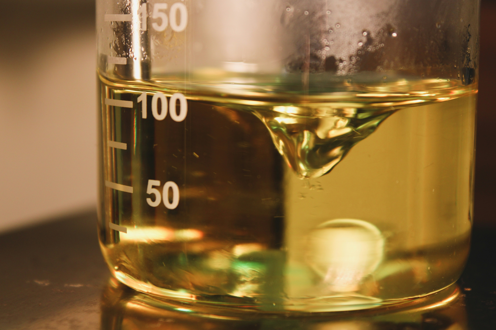

Instruções de Utilização
Processo de Frabricação
Aqui você pode encontrar as instruções basicas para a produção do etanol utilizando o projeto.
Lembrando: os passos abaixo indicam o funcionamento da destilação e fabricação do etanol, as
informações dos sensores de monitoramento presentes no projeto estarão ao lado.
| Valores monitorados | Valores ideais |
|---|---|
| Temperatura da destilação | 78°C – 90°C |
| Pressão ideal | 0.1 – 0.3 MPa |
| Fluxo de resfriamento | Contínuo |
| Nível do reservatório | Médio / Seguro |
Instruções de produção
1. Preparo do Mosto
Nesta etapa inicial, ocorre a preparação da solução que será fermentada posteriormente pelas
leveduras.
Procedimentos:
- Adicione água e açúcar ao misturador na proporção aproximada de 3 litros de água para cada 1 kg de açúcar.
- Ajuste o pH da solução entre 4,5 e 5,5, garantindo um ambiente adequado para a fermentação.
- Acrescente nutrientes conforme a recomendação técnica para melhorar o desempenho das leveduras.
- Mantenha o sistema de mistura ativo até a completa dissolução do açúcar.
4. Purificação
Nesta fase ocorre a elevação da pureza do etanol obtido.
Procedimentos:
- Encaminhe o destilado para a coluna de purificação.
- Encaminhe o destilado para a coluna de purificação.
- A coluna removerá parte da água e impurezas presentes.
- Colete o etanol purificado no recipiente fina
Objetivo da Etapa: Aumentar a concentração alcoólica e melhorar a qualidade do bioetanol produzido. Recomendação: Uma purificação eficiente contribui diretamente para um combustível de melhor desempenho.
2. Fermentação
A fermentação é a etapa responsável pela conversão dos açúcares em etanol por meio da ação das
leveduras.
Procedimentos:
- Transfira o mosto preparado para o fermentador.
- Adicione a levedura responsável pelo processo fermentativo.
- Controle a temperatura entre 30 °C e 32 °C.
- Mantenha o sistema completamente fechado para preservar o ambiente anaeróbico.
- Aguarde o período de fermentação, estimado entre 24 e 48 horas.
Objetivo da Etapa: Produzir etanol através da transformação biológica dos açúcares presentes no mosto. Recomendação: Evite abrir o fermentador durante o processo para impedir contaminações e perdas de eficiência.
5. Etanol Final
Após todas as etapas, o bioetanol estará pronto para armazenamento e utilização.

3. Destilação
Após a fermentação, inicia-se a separação do etanol do restante da mistura líquida.
Procedimentos:
- Transfira o líquido fermentado para o balão de destilação.
- Inicie o aquecimento controlado do sistema.
- O vapor rico em etanol passará pelo condensador, retornando ao estado líquido.
- Colete o destilado composto principalmente por etanol e água.
Objetivo da etapa: Separar o etanol produzido durante a fermentação através das diferenças de temperatura de ebulição
6. Vídeo Demonstrativo
Assista ao vídeo demonstrativo para visualizar todas as etapas do funcionamento do sistema na prática e compreender melhor o fluxo completo da produção.

6. Vídeo Demonstrativo
Assista ao vídeo demonstrativo para visualizar todas as etapas do funcionamento do sistema na prática e compreender melhor o fluxo completo da produção.